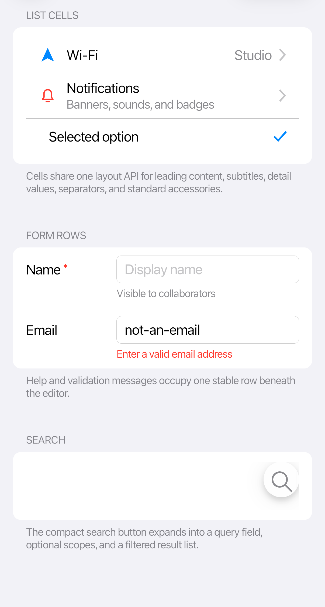

Controls overview
The gallery groups controls by the job they do. Each control page shows the common case first, then customization and states that are easy to miss.

Themed Avalonia controls
Use a standard Avalonia control when it provides the behavior you need. CupertinoTheme supplies the iOS styling.
| Area | Examples |
|---|---|
| Actions | Button, RepeatButton, HyperlinkButton, ToggleButton, SplitButton, DropDownButton |
| Input | TextBox, MaskedTextBox, NumericUpDown, ComboBox, AutoCompleteBox, CheckBox, RadioButton, ToggleSwitch, Slider |
| Collections | ListBox, TreeView, TabControl, TabStrip, Carousel |
| Date and time | Calendar, CalendarDatePicker, DatePicker, TimePicker |
| Feedback | ProgressBar, RefreshContainer, ToolTip, Expander |
| Menus | Menu, MenuFlyout, ContextMenu, Flyout |
Cupertino-specific controls
These controls add features such as draggable sheets, swipe actions and grouped form rows.
| Control | Use it for |
|---|---|
GlassSurface |
Live refractive material |
CupertinoNavigationPage |
Stack navigation and interactive back gestures |
CupertinoSheet |
Modal sheets with large or medium/large detents |
Dialog |
Alerts and action sheets with semantic action roles |
CupertinoSwipeView |
Leading and trailing row actions |
CupertinoDatePicker, CupertinoTimePicker, CupertinoDateTimePicker |
Compact and inline iOS pickers |
CupertinoCalendarView |
Inline month calendar |
CupertinoToolbar |
Bottom action groups separated by flexible spacers |
CupertinoBadge |
Counts and dot indicators |
CupertinoListCell, CupertinoFormRow, Section |
iOS list and form composition |
CupertinoSearchView |
Search field with filtered results |
CupertinoPageControl |
Page-position dots |
CupertinoIcon |
Original vector icons authored to iOS metrics |
See the API reference for properties, methods and events.